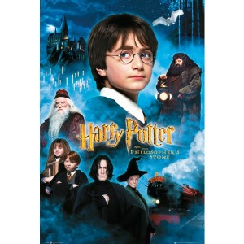
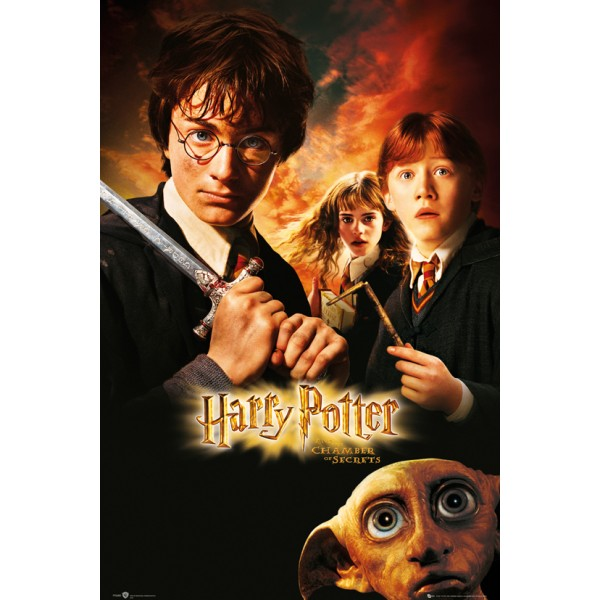
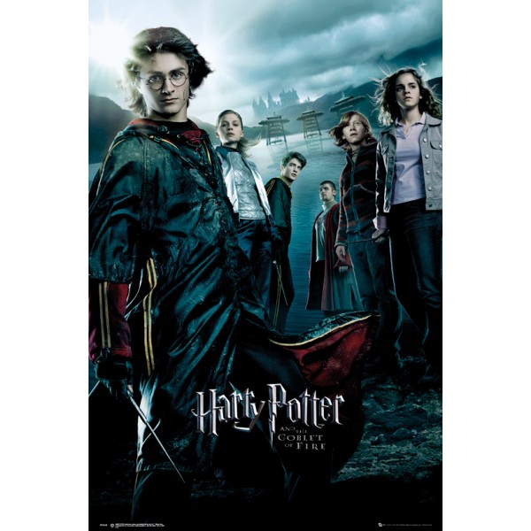
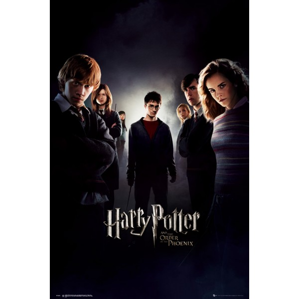
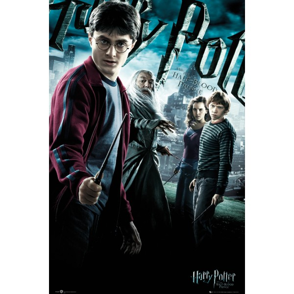

Harry Poter

ถ้าจะพูดถึงวรรณกรรมเยาวชนที่ทุกคนรู้จัก จะต้องมีชื่อ แฮร์รี่ พ็อตเตอร์ อยู่ในนั้นแน่นอน
เรื่องราวของเด็กชายที่มีแผลเป็นสายฟ้าฟาด แล้วได้มาเรียนที่โรงเรียนเวทมนต์
แล้วต้องเจอเรื่องราวต่างๆที่นำไปสู่การเผชิญหน้ากับพ่อมดร้ายคนหนึ่งที่ต้องการครองอำนาจมืด
ผลงานปลายปากกาของ เจเค โรว์ลิ่ง ที่ไม่ใช่แค่เปลี่ยนชีวิตเธอเท่านั้น แต่มันสร้างกระแสโลกพ่อมดแม่มดจนลืมวีดีโอเกมเลยทีเดียว
นั่นเพราะเรื่องราวจินตนาการที่ เจเค เสกสรรค์ เนื้อหาน่าติดตาม จนสามารถทำยอดขายถล่มทลายทุกครั้งที่วางจำหน่าย
แล้วยังต่อยอดสินค้าต่างๆมากมาย Harry Potter มีด้วยกันทั้งหมด 7 ภาคดังนี้

Harry Potter and the Philosopher’s Stone
แฮร์รี่ พ็อตเตอร์ กับ ศิลาอาถรรพ์

Harry Potter and the Chamber of Secrets
แฮร์รี่ พอตเตอร์กับห้องแห่งความลับ
Harry Potter and the Prisoner of Azkaban
แฮร์รี่ พอตเตอร์กับนักโทษแห่งอัซคาบัน

Harry Potter and the Goblet of Fire
แฮร์รี่ พอตเตอร์กับถ้วยอัคนี

Harry Potter and the Order of the Phoenix
แฮร์รี่ พอตเตอร์กับภาคีนกฟีนิกซ์

Harry Potter and the Half-Blood Prince
แฮร์รี่ พอตเตอร์กับเจ้าชายเลือดผสม
Harry Potter and the Deathly Hallow
แฮร์รี่ พ็อตเตอร์ กับเครื่องรางยมทูต 7.1&7.2